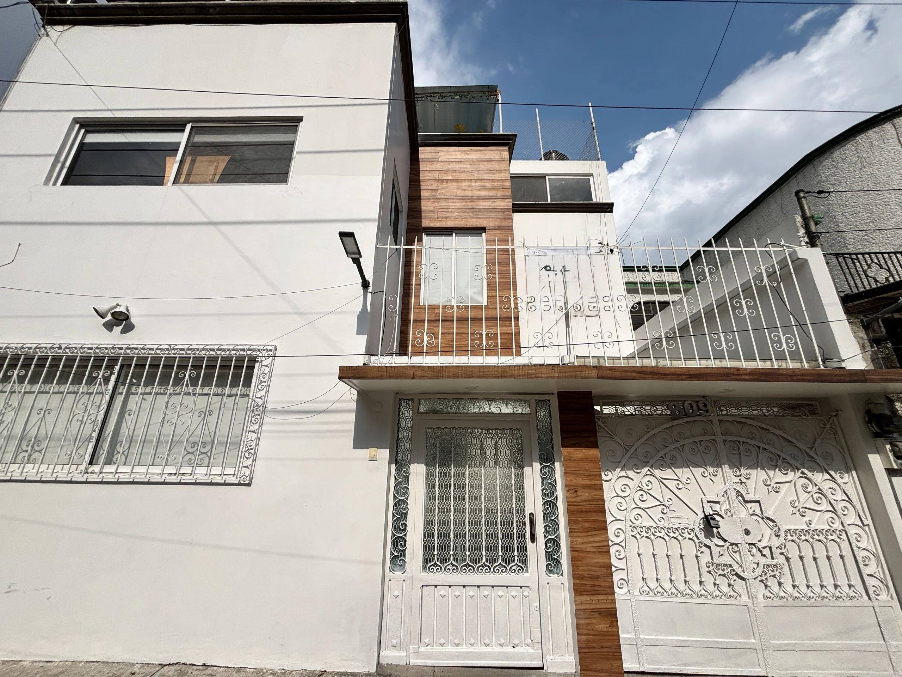

venta · Juárez, Cuauhtémoc
Venta de Departamento Amueblado a Pasos de Reforma con 2 Estacionamientos Fijos
$8,700,000 MXN

Tu primer hogar. Una nueva etapa. Una inversión. Te acompañamos a comprar, vender o rentar en CDMX, a tu manera.
Hablemos de tu proyectoSomos un equipo de profesionales inmobiliarios certificados que combina experiencia y nuevas perspectivas para acompañar cada proyecto en CDMX.
Conoce a Alberto y Renata
venta · Juárez, Cuauhtémoc
$8,700,000 MXN

renta · Tabacalera, Cuauhtémoc
$22,500 MXN

venta · San Miguel Tecamachalco, Naucalpan de Juárez
$7,500,000 MXN

venta · Del Valle Centro, Benito Juárez
$4,490,000 MXN

venta · Miravalle, Benito Juárez
$14,000,000 MXN
Propiedades vendidas y rentadas con el acompañamiento de Confort4.
 VENDIDA
VENDIDA VENDIDA
VENDIDA VENDIDA
VENDIDA RENTADA
RENTADA RENTADA
RENTADA RENTADA
RENTADA21 reseñas
Gracias al trabajo tan profesional de Albert ahora tenemos la casa de nuestros sueños todo acompañamiento y seguimiento fueron fundamental para cerrar la operación. Muchas gracias Albert por todo.
Agradezco mucho como es que se me dió la atención y hasta la fecha en cualquier duda Renata contesta y está al pendiente, tarde meses en poder encontrar el departamento ideal y ella a la primera me atendió y dió toda la información. En verdad gracias por el seguimiento, recomiendo completamente.
100% Profesionales! Sin duda un gran opción para tus operaciones inmobiliarias
Buena actitud y servicio de ambos, me gusto el seguimiento que me dieron.
Tanto Renata como Alberto son muy profesionales, llevan sus operaciones con total entrega, los procesos son muy claros y el acompañamiento es total.
Son muy profesionales, confiables, los recomiendo 100%
Excelente atención y profesionalismo , gracias
Super equipo de Bienes raíces, 100% recomendables
Gran profesionalismo! Renata nos acompañó en todo el proceso, siempre atenta a cualquier duda que tuviéramos y con la mejor disposición para resolver dudas y ayudarnos en el proceso. La recomiendo mucho
Estoy muy contenta con el apoyo y acompañamiento que nos fue brindado por Albert, siempre muy comprometido y atento para tener el mejor proceso posible, cubriendo todas nuestras necesidades y guiándonos desde principio hasta el cierre. Nuevamente muchas gracias Albert!!
Excelente equipo. Todo muy transparente y rápido. Los mejores en servicios inmobiliarios. Vendimos el depa en mucho menos tiempo del esperado gracias a su apoyo.
La atención que brindan desde el primer contacto refleja la seriedad y profesionalismo con el que manejan sus procesos de compra, venta y renta. Más que ser un simple intermediario, ofrecen un servicio integral de asesoría y acompañamiento.…
La experiencia de trabajar con Renata y Alberto fue excelente! Desde el primer momento demostraron mucho profesionalismo, fueron muy claros y…
Albert es un excelente broker, nos ayudó a vender nuestro depa y siempre nos apoyó con todo lo necesario. Tuvimos varios temas al largo de la venta, pero Albert logró encontrar formas de resolverlos y logramos finalizar la venta. Recomiendo mucho!
Alberto nos ayudó muchísimo con la venta de nuestro departamento. Conoce mucho el mercado y siempre muy atencioso. Muchas gracias Alberto!!
Buscaba un departamento para rentar y entre tantos anuncios e información pude dar con Renata, quien hizo que toda la experiencia de lo que implica rentar fuera mucho más sencillo y fluido. Dio respuesta rápida a nuestra solicitud,…
Confort 4 es sin duda alguna la mejor opción en el mundo inmobiliario. No solamente por la comodidad y tranquilidad de saber que te encuentras en manos…
Excelente asesoría inmobiliaria. ¡Los mejores! Buscan lo mejor para ambas partes, con ética y profesionalismo.
Renata y Alberto son los mejores brokers inmobiliarios del México!! Me han ayudado en distintas ocasiones a comprar, y también a rentar!! Trato super profesional, personalizado y humano!! Me encanto que cada uno tiene su especialidad. Ren…
Tuve una excelente experiencia con Keller Williams Premier. Sin duda, fue lo mejor para mí y mi familia haberlos encontrado. Desde el inicio nos brindaron un trato muy profesional, cercano y transparente.…
Renata and Albert are truly outstanding real estate professionals. I spent several months searching for an apartment to buy, and after meeting them, I was finally able to find my ideal place to live. They are attentive, organized, genuinely…
Detrás de cada proyecto, hay personas. Gracias por dejarnos ser parte de su historia.

Gracias por la confianza, de principio a fin.

Personas, familias y nuevas historias por comenzar.

Compartir estos momentos es lo que más nos gusta de acompañarte.

Tu proyecto también se vuelve parte de nuestra historia.

Tu proyecto marca la estrategia. Definimos prioridades, revisamos la información disponible y acordamos qué sigue.

Coordinamos opciones, visitas y conversaciones para que cada avance responda a lo que necesitas.

Ordenamos las condiciones y coordinamos la participación de los especialistas que requiere la operación.
Información breve para decidir tu siguiente paso.
Revisamos las características del inmueble, su contexto y referencias comparables. Esa información ayuda a conversar sobre una estrategia; una opinión comercial y un avalúo formal son herramientas diferentes.
Sí. Podemos empezar por definir prioridades y presupuesto. Si necesitas financiamiento, conviene revisar sus condiciones con la institución correspondiente antes de comprometer pagos.
Sí. En la primera conversación aclaramos de qué lado de la operación estás y qué necesitas. La guía de renta tiene un recorrido para cada caso.
Tu objetivo, zona de interés y plazo aproximado. Si tienes una propiedad, sus características generales. No necesitas enviar documentos personales para empezar.
No. Cada especialista tiene una función distinta. El equipo inmobiliario organiza el proceso y coordina la participación de profesionales cuando corresponde.
Mostramos los inmuebles publicados del asesor en el inventario conectado. La disponibilidad puede cambiar; confirma con el equipo antes de organizar una visita.
No encontramos esa pregunta. Cuéntanos tu duda en el formulario.